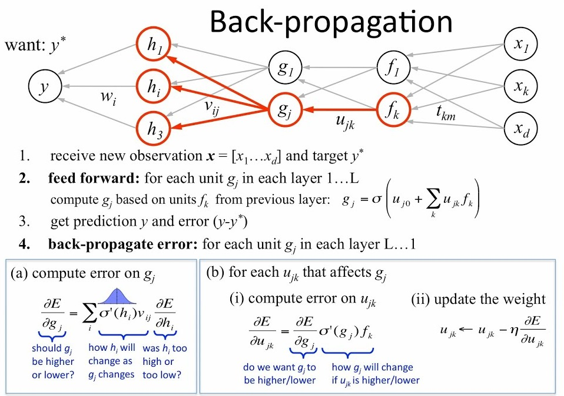
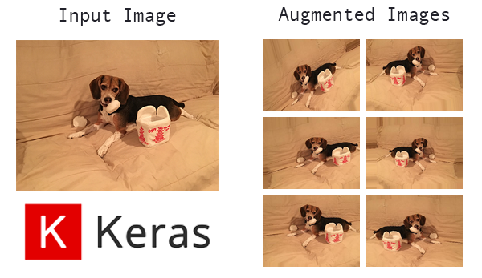

3. Neural Networks and Computer Vision
What are Neural Networks
In the past workshop, we talked about many of the weaknesses of neural networks, including their dependence on powerful computing and data. However, neural networks have one main advantage over classical machine learning methods: they can learn much more complex representations of your data than methods that we talked previously about can. In addition, when large amounts of feature rich data is available (such as with images), neural networks are not only the most logical method for tackling these problems, but the best.
Neural Networks differ a lot compared to the past methods in that the inspiration is not mathematical, but biological. Neural networks operate in similar way to how neurons within our brain operate. Although neural networks are not exact copies of their biological counterparts (see Spiking Neural Networks below), we can approximate how they work to accomplish similar tasks. Here's a more in depth explanation of how Neural Networks work from a biological standpoint from Stanford University's CS231n:
Each neuron receives input signals from its dendrites and produces output signals along its (single) axon. The axon eventually branches out and connects via synapses to dendrites of other neurons. In the computational model of a neuron, the signals that travel along the axons (e.g. x_{0}) interact multiplicatively (e.g. w_{0}x_{0}) with the dendrites of the other neuron based on the synaptic strength at that synapse (e.g. w_{0}). The idea is that the synaptic strengths (the weights w) are learnable and control the strength of influence (and its direction: excitory (positive weight) or inhibitory (negative weight)) of one neuron on another.

Thus, modeled from how neurons function in human brains, we can make models that are a bit more "smart" than those covered in the classical ML section.
Just a preface on this workshop: The subject of neural networks is a very dense subject. Although the documentation for this section is the longest we have had yet, this barely scratches the surface of neural networks so don't feel dissuaded if this seems like an overwhelming amount of information. You can take entire courses on subjects that we spend 30 minutes on, so make sure that if certain subjects in this workshop interest you, make sure to do your own further research into neural networks. (Check out the Additional Resources page)
Computer Vision
One of the best uses of Neural Networks and Deep Learning in general is Computer Vision. Computer Vision is a field of artificial intelligence that aims to develop algorithms and methods to complete tasks using images and video from the real world, and get analysis or inferences on this visual data. Computer Vision intersects many fields, including Machine Learning and Robotics, and is the basis for many groundbreaking technologies such as facial detection and self driving cars.
Computer Vision is a good use case for Neural Networks, as Neural Networks are typically better at completing these more complicated tasks.
Keras
To code our Neural Networks within python, we will use a library called Keras. Keras is a library that makes it very easy to model and train deep neural networks within python. It simplifies the process of establishing neural network layers, and provides many convenience functions for things such as generating new data, training your model, and evaluating the performance of your models as well.

Google Colab
One question you might have is: "How can I train neural networks with my 5 year old laptop without a GPU, or even worse ... a Mac? I heard that you need a beefy computer with a GPU to do these sort of things." And while that is a valid worry, and yes, you definitely need a powerful computer, but we will get around this using the cloud. More specifically, we will be using Google Colaboratory (or Colab for short), which is essentially a Jupyter Notebook running on Google Cloud Backend, which allows you to use their powerful CPU's and GPU's (or even a TPU for you weirdos), to run your code and train your models, without melting the bottom of your laptop.

The Challenge:
After the last terrible showing at your last job, you are now being forced to scour the world for any desperate attempt to make money. In your search through Craigslist ads, you find a man who will pay you to figure out ways to automate the sorting of his LEGO bricks (he's really lazy). So, in order to keep the lights on, you decide to dust off your machine learning toolkit to help him classify between different types of bricks.
How can we use machine learning to classify and do inferences on images?
The Dataset:
To complete this task we obviously have to use past training data of imagery, so let's use a dataset related to the problem at hand: a dataset of LEGO bricks! The images in this dataset are artificially generated, meaning they are generated from 3D models rather than taking pictures of LEGOs with a camera, but they are images nonetheless and can prove to be useful in solving our problem.
Basics: Perceptron
When you first get into creating neural networks, things can get pretty confusing. Words like perceptron, activation function, and backpropagation can get pretty confusing. However, don't worry too much as we have actually already created the simplest case of a neural network: a perceptron.
A perceptron functions as follows:

-
The perceptron takes input features [x_{1} \cdots x_{n}] and multiplies each of the input features to each of it's corresponding weights [w_{1} \cdots w_{n}] for each feature
-
Then, it sums up all of these weights multiplied by their inputs such that the output of this, y is $$y = w_{1}x_{1} + w_{2}x_{2} + w_{3}x_{3} + \cdots + w_{4}x_{4} $$
- We then apply an activation function, h(x) (also known as a transfer function for you EE majors), to the weighted sum, to get our classification, \hat{y}. To match the diagram above, let's use a step function as our activation, outputting 0 for outputs below zero and, and 1 for ouputs above zero, such that
- With the final output prediction:
$$ \hat{y} = sign(w^{T}x) $$
- This results in a loss function:
This is exactly how we defined a linear regression classifier in the first workshop The linear single layer perceptron, therefore is simply our linear regression model, with an activation function at the end. In this case, the activation function is used to add a nonlinearity to our classification. In this case, we created a discrete nonlinearity, to create output labels for our classifications.
In general for neural networks, these activation functions create non-linearities, which can allow our algorithms to model nonlinear functions, or do nonlinear classifications. Such example of nonlinear problems are the problems in which neural networks often tackle: tasks of speech recognition, financial analysis, and computer vision, problems that linear machine learning algorithms struggle to complete.

Multi-Layer Perceprton (MLP)
To continue on the last point, if we want to build on our perceptron, why not just once again, use the inspiration of a brain? Let's connect many neurons to each other, and see if it can classify.
This is where the Multi-Layer Perceptron (MLP) comes in. A multilayer perceptron functions similarly to a standard perceptron, except it has more intermediate layers between the input and output, called hidden layers. These layers are called hidden layers simply because they are between the input and outputs, and are therefore "hidden" if you view the MLP from the outside.
Standard linear perceptrons such as the one shown before are great for doing linear tasks, such as linear regression and classification, but Multi-Layer Perceptrons excel at fitting Non-linear datasets.
In general a MLP contains 3 sections:
-
Input Layer
- This simply takes in the inputs and feed them into the hidden layers of the network.
-
Hidden Layers
- These are neurons where every neuron in a layer is connected to neurons in the layers in front of and behind that layer. MLP's can have as many hidden layers as you want to fit more complicated functions. However, note that with the more hidden layers your model has, the more prone your network is to overfitting (note below for more information about overfitting)
-
Output Layers
- The output layer essentially does the opposite of what the input layer does, it takes all the outputs from the hidden layers, applies an activation function to get a final prediction value
Backpropagation
In order to get an output value for your MLP it's fairly easy. Just as in the single perceptron, we feed our inputs into the perceptron, and these weights are added and then pushed forward into the activation function. This is what's called a forward pass of the neural network, where calculations from the weights and neurons are passed forward.
While it is easy to get an output value from a trained MLP, how can we actually train this model is fairly complicated, but works magically when implemented.
Backpropagation works at the level of each individual neuron. For each neuron, with a given input, and a known output, we can calculate the gradient over that specific neuron with its individual input and output values. Since the specific mathematics of calculating these gradients can take an entire 2 hours in itself, we will save you the math (for now) and just show you that in order to start calculating these gradients, we need to do an entire forward pass through our neural network to calculate the gradient between the final neurons outputs and inputs. Using this gradient, we can recalculate weights, and move backwards throughout the neural network.
See this figure below for an illustration on how backpropagation works.

Attention
Neural Networks are amazing universal approximators, in that they can approximate any function, linear or nonlinear. However, due to the nature of them being able to approximate any function, they can have a tendency to over-approximate a function as well. Let's say we take samples from an unknown wave, with the true wave being a simple sine wave. In the real world, when sampling a wave, there will be a bit of noise, oftentimes for waves gaussian white noise that comes along with your sample that makes normally distributed around the true values of your function.
We can illustrate this in the figure below, with blue circles as our samples, and the green function as our true function, the sine wave. The model has obviously learned weights that make it fit the training data exactly. The function it generated passes through all the points, therefore we can expect the training error to be very low. On the other hand, this function is very far from the true sine wave, meaning we either need more data to avoid over fitting, or train our model enough where it can perform well on the training data, but generalize well to unseen data.
Convolutional Neural Networks
So you might ask, using things that we have previously talked about, how can we make an image classifier? For a simple example, we can just have each pixel be an input feature for the MLP. There is one weakness to this however: this method is insensitive to the position of objects in the image. Since each input pixel has an associated, single weight, this model doesn't account for movements of objects within the image. In addition, MLP's also only use pixels as their features, as apposed to shapes and other visual elements in an image.
Convolutional Neural Networks aim to solve that issue. By sliding a window, or filter, across an image, the CNN then convolves the weights and outputs them to a feature map. It can use these convolutions to in fact learn how to extract notable features from images out of images (more on what we mean later).

The Basic structure of a Convolutional Neural network is as follows:
-
Feature Extraction
- Convolutional Layers to extract features from images
- Pooling Layers to take previous convolutional layers to a lower dimension
-
Classification
- Dense Layers to classify using learned features
Convolutional Layers
Convolutional Layers, the Namesake of CNNS act as the feature recognition sections of CNN's. They act as a sliding window, taking a sliding window, and convolving with the pixels that the current filter is under by learned weights. This can be use to extract features out of images, as the filters it learns can effectively learn the spatial orientation of pixels without being dependent on position in image, because of the sliding window.

Pooling Layers
Pooling Layers are used to downsample convolutional layers down to a lower dimension. This allows the network to learn "higher level" features by allowing forward convolutional layers to learn from this downsampled data.

Dense Layers
Dense layers essentially act in a similar fashion to the hidden layers of a MLP. Much like how MLP's take input features from data and then classifies them, the Dense, or Fully Connected Layers takes features generated from the Convolutional layers and then classifies them using weights learned through backpropagation.
Types of Activation Functions
Although we talked previously about activation functions that add nonlinearities to your neural network, our CNN needs something similar to add nonlinearities in order to learn when to "activate" a neuron.
Rectified Linear Unit (ReLU)
The bread and butter activation function for CNN's and most neural networks is the **Rectified Linear Unit (ReLU)
The ReLU activation function is one of the most commonly used activation functions in Deep Learning mainly because of it's simplicity. It is very cheap to compute the output of a ReLU activation, as it is simply just a boolean map, with it's derivative also being very easy to calculate (max(0,1))
TL;DR for ReLU: ReLU is an nonlinearity commonly used in Convolutional Neural Networks, that is simple and non computationally heavy.
Sigmoid
We will save you the math for the derivation of this, but Sigmoid activation functions are used to output the class probabilities, oftentimes in the final layer of the network, as you will see at the end of the CNN you construct.
AlexNet
AlexNet is one of the most groundbreaking CNN architectures, simply because it was one of the first to use multiple Convolotional Layers in series. This network changed the face of ILSVRC (we will talk more about this competition later), ushering a new era of Deep Learning supremacy in the field of image classification algorithms.

Creating Neural Networks with Keras
Let's start coding! First, let's make an implementation of AlexNet in Keras to complete our task to classify LEGOS
If we take a step back to the past workshops, we followed a similar workflow for all image classification tasks.
- Clean Data
- Create Features
- Train Model
- Test Model
In this workshop, we will follow a similar workflow as well to make our image classifier, which is based on the AlexNet architecture we talked about previously.
Clean Data
For this section, we can't really do much data cleaning. We can do some modifications to our images, but in general we don't want to change the images much. However, we can generate more images to simulate a larger dataset, which can be easily done with Keras.
Let's make a new function that takes in certain parameters, and creates a generator for our training and validation data.
1 2 3 4 5 | def generate_data(train_data_dir,image_width, batch_size, aug): #create generators here return train_generator, validation_generator |
Now let's actually make these generators. The first generator we will make is the ImageDataGenerator, which will set up the transformations we will add to the data.
The image transformations we want to add is a horizontal shear, flipping the image vertically and horizontally, in addition to zooming in the image. For each image transformation we do, we can actually multiply our dataset, as a new training sample is made for each augmentation. See the figure below for example augmentations

Now we can make the training and test generators for our data.
1 2 3 4 5 6 7 8 9 10 11 12 13 14 15 16 | train_generator = train_datagen.flow_from_directory( train_data_dir, # Other arguments (fill these in) # # subset='training', shuffle=True) #Generate Validation data from images validation_generator = train_datagen.flow_from_directory( train_data_dir, # same directory as training data # # # subset='validation', shuffle=False) |
Creating Features
As we talked about before, Convolutional Neural Networks implicitly creates features from input images. With this stage, the CNN is doing all of the heavy lifting, but let's actually do this right now
Let's set up the layer structure using the below chart for their respective filter sizes, stride, etc. We can create a function to make our model with the function returning the sequential model object that Keras created.
1 2 3 4 5 6 7 8 9 10 | import keras from keras.layers import Dense, Activation, Dropout, Flatten, Conv2D, MaxPooling2D def create_alexnet(): model = keras.models.Sequential() model.add(your layer) #add layers according to the chart above return model |

To aid you in this, below we have some examples on adding new layers to your neural net:
1 2 3 4 5 6 7 8 9 10 11 12 13 | #Example for input layer with 96 filters, a filter size of 11x11, with a stride of 4 and relu activation #we denote input shape since this is the input layer model.add(Conv2D(filters=96, input_shape=(224,224,3), kernel_size=(11,11), strides=(4,4), padding='valid',activation='relu')) #Example for MaxPooling2D Layer for a 2x2 size and a size 2 stride model.add(MaxPooling2D(pool_size=(2,2), strides=(2,2), padding='valid')) #Flatten your the output matrix from your Conv2D Layers model.add(Flatten()) #Dense Layer with 9216 nodes and relu activation model.add(Dense(9216,activation='relu')) |
After that we can create our model and generate our data
1 2 3 4 | train_generator, validation_generator = generate_data(train_data_dir,image_width,64,aug) #Use create_alexnet() function to create network layer for AlexNet alexnet = create_alexnet() |
Train Model
Now let's finally train our model
1 2 3 4 5 6 7 8 9 10 11 12 13 14 | from keras.optimizers import SGD #Use stochastic gradient descent for optimizer opt = SGD(lr=0.01, decay=1e-6, momentum=0.9, nesterov=True) #Compile model with a categorical cross entropy loss and adam optimizer alexnet.compile(loss=keras.losses.categorical_crossentropy, optimizer=opt, metrics=['accuracy']) #Fit model and generate Data history = alexnet.fit_generator(generator=train_generator, steps_per_epoch=64, validation_data=validation_generator, validation_steps=64, epochs=20) |
Transfer Learning
Let's get back to the challenge at hand. After your final accuracy of around 70 percent from the CNN you just made, that obviously isn't good enough to classify these LEGO bricks reliably. Your client is definitely going to encounter a bunch of
Transfer Learning is the process of taking weights learned from a previous task, and using those previous weights to learn a new task.
Think of the example from when we made a linear regression classifier with gradient descent. The weights that make up the slope of the line for linear regression for California housing prices are already at the local minimum learned from gradient descent. What if we wanted to train a linear regression model on Texas housing prices? Althogh the line fit doesn't have exactly the same slope and y-intercept, we can expect this California housing price line to be a lot closer than a random line to the line of best fit for
This isn't too useful when dealing with simple models. As we saw before, it only takes a second to train our linear regression as we only had 8 weights that needed to be trained. However, what if we want to train models with millions of weights that need to be trained? By using previously trained weights that have been learned on relevant problems, we can expect our time and computing saved on training to be a lot higher, since the total amount of parameters that need to be trained have been reduced heavily.
In short, Transfer Learning is used to save training time and computation, and in the case of CNN's, can be used to extract features when you don't have enough data to train the convolutional layers of your network.
Attention
One main negative point with transfer learning is that it is essentially a black box. Since we have no control over how the layers are being setup, and all aspects of the original neural network have to be followed such as relative sizes and things such as the optimizer and batch rates used. Be careful using transfer learning models, as many of these parameters are essntial to your CNN training at all.
ImageNet
ImageNet is not a Network Like much of the previous neural networks discussed, but in fact is a database with over 1 million images and 1000 classes aimed to be used in the ImageNet Large Scale Visual Recognition Challenge, where researchers attempt to make the highest accuracy image classifier. This dataset is used to benchmark many image classifiers, and is used greatly in transfer learning to train the Convolutional Layers in transfer learning problems.
VGG16
VGG16 is an incremental improvement on AlexNet, being released shortly after. (It's essentially a deeper AlexNet with some other changes). VGG16 however is very heavy, and takes forever to train so why not use transfer learning to apply this better network to our problem.

The process for Transfer Learning is similar, except instead of creating convolutional layers like we did with AlexNet, we can simply download the convolutional layers for VGG and add our own classification layers afterwards, loading VGG with the include_top = False argument.
1 2 3 4 5 6 7 8 9 10 11 12 13 14 15 16 17 18 19 20 21 22 23 24 25 26 27 28 29 | from keras.layers import Dense, Flatten, Dropout from keras import layers from keras.applications.vgg16 import VGG16 def create_vgg(): #Load VGG with imagenet weights vgg = VGG16(###) #Freeze all layers of the original VGG model except for last 4 # Create the model model = keras.models.Sequential() # Add the vgg convolutional base model model.add(vgg) # Add new layers # Flatten output matrix # Fully Connected Layer with 1024 nodes and ReLU activation # Optional: Add dropout of 0.2 model.add(Dropout(0.2)) #Add dense layer with 16 ourputs and softmax activation return model |
We will then train the model with similar steps as what we did before, only with a different optimizer
1 2 3 4 5 6 7 8 9 10 11 | from keras import optimizers #Compile VGG with RMSprop vgg.compile(optimizer=optimizers.RMSprop(lr=1e-4), loss='categorical_crossentropy',metrics=['accuracy']) #Retrain history = vgg.fit_generator( ### ### ### ) |